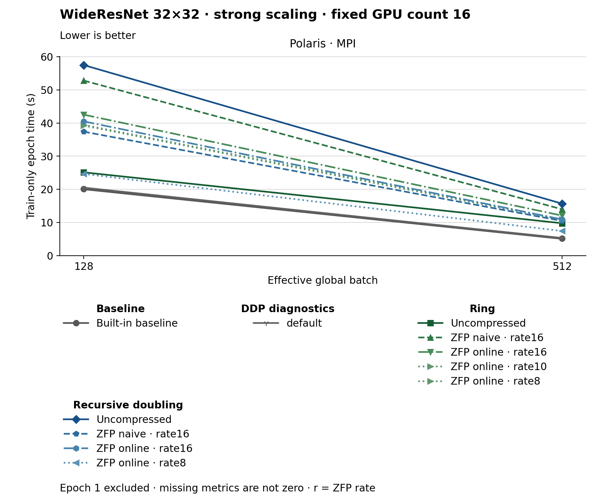

The figure uses lines. Methods use colors, line styles and markers. The metric is Train-only epoch time (s). Polaris · MPI, Effective global batch 128: Built-in baseline has the lowest plotted value, 20.150. Polaris · MPI, Effective global batch 512: Built-in baseline has the lowest plotted value, 5.190. Epoch 1 is excluded. Values are medians; when repeated runs are available the selected repeat policy is median. These are not confidence intervals across repeated jobs. Missing or unrecorded metrics are omitted, not set to zero.
| Panel | Effective global batch | Method | Value | Runs |
|---|---|---|---|---|
| Polaris · MPI | 128 | none | 20.15 | 1 |
| Polaris · MPI | 128 | default | 20.51 | 1 |
| Polaris · MPI | 128 | ring | 25.13 | 1 |
| Polaris · MPI | 128 | ring_zfp_naive:16 | 52.8 | 1 |
| Polaris · MPI | 128 | ring_zfp_online_coll:16 | 42.52 | 1 |
| Polaris · MPI | 128 | ring_zfp_online_coll:10 | 39.46 | 1 |
| Polaris · MPI | 128 | recursive_doubling | 57.49 | 1 |
| Polaris · MPI | 128 | recursive_doubling_zfp_naive:16 | 37.39 | 1 |
| Polaris · MPI | 128 | recursive_doubling_zfp_online_coll:16 | 40.5 | 1 |
| Polaris · MPI | 128 | recursive_doubling_zfp_online_coll:8 | 24.65 | 1 |
| Polaris · MPI | 512 | none | 5.19 | 1 |
| Polaris · MPI | 512 | default | 5.26 | 1 |
| Polaris · MPI | 512 | ring | 9.77 | 1 |
| Polaris · MPI | 512 | ring_zfp_naive:16 | 13.98 | 1 |
| Polaris · MPI | 512 | ring_zfp_online_coll:16 | 12.07 | 1 |
| Polaris · MPI | 512 | ring_zfp_online_coll:10 | 10.93 | 1 |
| Polaris · MPI | 512 | recursive_doubling | 15.67 | 1 |
| Polaris · MPI | 512 | recursive_doubling_zfp_naive:16 | 10.47 | 1 |
| Polaris · MPI | 512 | recursive_doubling_zfp_online_coll:16 | 10.92 | 1 |
| Polaris · MPI | 512 | recursive_doubling_zfp_online_coll:8 | 7.43 | 1 |
| Polaris · MPI | 128 | ring_zfp_online_coll:8 | 39.21 | 1 |
| Polaris · MPI | 512 | ring_zfp_online_coll:8 | 10.75 | 1 |